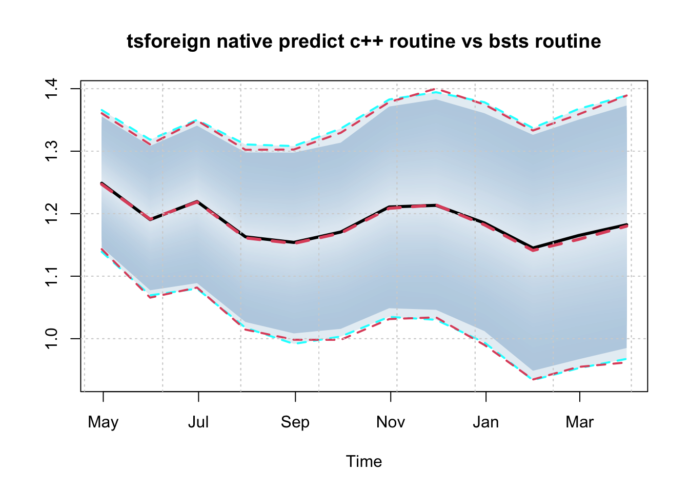
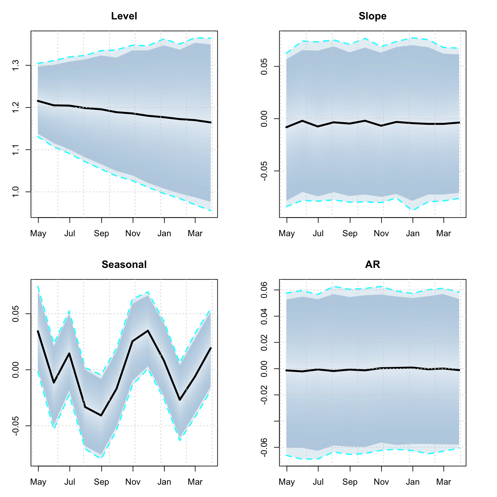

Chapter 7 tsforeign package
7.1 Introduction
The tsforeign package provides custom wrappers for the auto.arima function from the forecast package of R. Hyndman et al. (2021) package and the bsts method from bsts package of Steven L. Scott (2021), with methods for estimation, some diagnostics and prediction. This package may be extended in future to provide wrappers for other interesting models. For the bsts model, we have also made use of the tsconvert method from the tsmethods package to convert the output of the model to one conforming to the required inputs of the dlm package, for which we provide an example in the demonstration section.
Since both of those packages have their own vignettes and documentation, we proceed here directly into a demonstration of the functionality.
7.2 ARIMA model
The entry point for the ARIMA model is the arima_modelspec function
suppressPackageStartupMessages(library(tsforeign))
library(xts)
library(tsaux)
args(arima_modelspec)## function (y, xreg = NULL, frequency = NULL, seasonal = FALSE,
## seasonal_type = "regular", lambda = NULL, seasonal_harmonics = NULL,
## lambda_lower = 0, lambda_upper = 1.5, ...)
## NULLwhich allows for both regular and trigonometric seasonality.
For the demonstration example, we’ll use the AirPassengers dataset after first converting it into an xts object:
air <- AirPassengers
dt <- future_dates(as.Date("1948-12-31"), "months", length(air))
air <- xts(as.numeric(air), dt)
spec <- arima_modelspec(y = air, frequency = 12, seasonal_type = "regular",
seasonal = TRUE, lambda = NA)
mod <- estimate(spec)
summary(mod)## ARIMA(0,1,1)(0,1,1)[12]
## ------------------------
## Estimate Std.Error t value Pr(>|t|)
## ma1 -0.4018 0.08964 -4.482 7.381e-06
## sma1 -0.5569 0.07310 -7.619 2.554e-14
##
## sigma : 0.037
##
## AIC BIC AICc
## -483.31 -474.69 -483.13
##
## MAPE MASE MSLRE BIAS
## 0.0262 0.2297 0.0012 0tsmetrics(mod)## n no.pars LogLik AIC BIC AICc MAPE MASE
## 1 131 2 244.6574 -483.3147 -474.6891 -483.1258 0.02623633 0.2297063
## MSLRE BIAS
## 1 0.001228422 4.059721e-05plot(mod)
The predict function generates a predictive distribution via simulation and returns an object of class tsmodel.predict:
p <- predict(mod, h = 12)
plot(p)
Additionally, there is also a backtest method:
b <- tsbacktest(spec, h = 12, alpha = c(0.02, 0.1), cores = 5, trace = F)
b$metrics## horizon variable MAPE MSLRE BIAS n MIS[0.02] MIS[0.1]
## 1: 1 y 0.02359723 0.0009551475 0.003600284 72 78.94686 58.69298
## 2: 2 y 0.02832357 0.0013691638 0.006263684 71 79.20002 64.44840
## 3: 3 y 0.03298197 0.0018345480 0.008278681 70 93.00588 76.27669
## 4: 4 y 0.03711406 0.0023039090 0.009785940 69 115.69397 85.80206
## 5: 5 y 0.03852619 0.0024661099 0.011665334 68 123.99674 89.97901
## 6: 6 y 0.04160760 0.0027693072 0.013290887 67 132.75520 96.02243
## 7: 7 y 0.04391732 0.0031022106 0.015707828 66 139.52245 100.76898
## 8: 8 y 0.04531778 0.0031863408 0.018558568 65 138.42669 103.98039
## 9: 9 y 0.04704741 0.0033943049 0.020792507 64 141.69528 112.37043
## 10: 10 y 0.04913576 0.0037630478 0.024066220 63 151.25610 118.77286
## 11: 11 y 0.05020191 0.0039190388 0.026212273 62 165.19382 124.18195
## 12: 12 y 0.05271486 0.0042050364 0.027817457 61 169.09282 130.584467.3 bsts model
The bsts package of (Steven L. Scott 2021) provides functions for fitting Bayesian structural time series models. The entry point in our wrapper is the bsts_modelspec function:
args(bsts_modelspec)## function (y, xreg = NULL, frequency = NULL, differences = 0,
## level = TRUE, slope = TRUE, damped = FALSE, seasonal = FALSE,
## seasonal_frequency = 4, ar = FALSE, ar_max = 1, cycle = FALSE,
## cycle_frequency = NULL, cycle_names = NULL, seasonal_type = "regular",
## lambda = NULL, lambda_lower = 0, lambda_upper = 1, seasonal_harmonics = NULL,
## distribution = "gaussian", ...)
## NULLwhich provides a rich set of options such as degree of differencing,17 a sparse AR component, sparse regressors, regular or trigonometric seasonal components (including multiple seasonal), cyclical components and the Box Cox transformation. Once an object is estimated, and all required components have been generated, any additional methods on the estimated component are performed directly by custom written functions in the tsforeign package.
For the demonstration we’ll use the priceunits dataset from the tsdatasets package. Once a series is estimated, the resulting MCMC draws are converted to an mcmc object from the coda package of Plummer et al. (2020) in order to provide a nice summary report.
data("priceunits", package = "tsdatasets")
spec <- bsts_modelspec(y = priceunits[1:80,1], frequency = 12, differences = 0,
level = T, slope = T, damped = T, seasonal = T,
seasonal_frequency = 12, ar = T, ar_max = 3, lambda = 0)
mod <- estimate(spec, n_iter = 2000, trace = FALSE)
summary(mod)##
## Iterations = 1:2000
## Thinning interval = 1
## Number of chains = 1
## Sample size per chain = 2000
##
## 1. Empirical mean and standard deviation for each variable,
## plus standard error of the mean:
##
## Mean SD Naive SE Time-series SE Prob[Include]
## obs.sigma 0.013388 0.006782 1.516e-04 0.0007126 1.0000
## level.sigma 0.004859 0.003980 8.900e-05 0.0009739 1.0000
## slope.sigma 0.032426 0.006154 1.376e-04 0.0004130 1.0000
## slope.ar -0.386517 0.246273 5.507e-03 0.0212243 1.0000
## seasonal12.sigma 0.002162 0.002382 5.326e-05 0.0008249 1.0000
## ar1 0.086651 0.283209 6.333e-03 0.0262069 0.7170
## ar2 0.047933 0.152370 3.407e-03 0.0138606 0.4125
## ar3 0.001713 0.055853 1.249e-03 0.0022075 0.2230
## ar3.sigma 0.028651 0.007280 1.628e-04 0.0004397 1.0000
##
## 2. Quantiles for each variable:
##
## 2.5% 25% 50% 75% 97.5%
## obs.sigma 0.0053262 0.009204 0.012454 0.01650 0.026228
## level.sigma 0.0004008 0.001554 0.003921 0.00710 0.014547
## slope.sigma 0.0203082 0.028481 0.032512 0.03635 0.045049
## slope.ar -0.7785795 -0.562759 -0.419128 -0.24420 0.199956
## seasonal12.sigma 0.0001650 0.000566 0.001388 0.00281 0.009602
## ar1 -0.4300711 -0.032893 0.000000 0.23004 0.800293
## ar2 -0.1646536 0.000000 0.000000 0.02509 0.532574
## ar3 -0.1201496 0.000000 0.000000 0.00000 0.126217
## ar3.sigma 0.0201813 0.024911 0.028040 0.03152 0.039091
##
##
## Harvey's Goodness of Fit Statistic: 0.2149929
##
## MAPE MASE MSLRE BIAS
## 0.0371 0.4704 0.0023 -5e-04tsmetrics(mod)## n no.pars MAPE MASE MSLRE BIAS
## 1 80 9 0.03714795 0.4704494 0.00228517 -0.0004797903plot(mod)
The decomposition of the model into it’s fitted components is done via the tsdecompose method. However, note that the bsts routine returns the smoothed component states, not the filtered ones.
tde <- tsdecompose(mod)
# distribution objects of state components
str(tde)## List of 5
## $ Level : 'tsmodel.distribution' num [1:1971, 1:80] 1.73 1.67 1.65 1.57 1.67 ...
## ..- attr(*, "dimnames")=List of 2
## .. ..$ : NULL
## .. ..$ : chr [1:80] "1992-08-31" "1992-09-30" "1992-10-31" "1992-11-30" ...
## ..- attr(*, "date_class")= chr "Date"
## $ Slope : 'tsmodel.distribution' num [1:1971, 1:80] -0.0475 -0.0139 0.0316 0.0715 0.0208 ...
## ..- attr(*, "dimnames")=List of 2
## .. ..$ : NULL
## .. ..$ : chr [1:80] "1992-08-31" "1992-09-30" "1992-10-31" "1992-11-30" ...
## ..- attr(*, "date_class")= chr "Date"
## $ AR : 'tsmodel.distribution' num [1:1971, 1:80] -0.0672 -0.0672 -0.0617 0.0286 -0.0556 ...
## ..- attr(*, "dimnames")=List of 2
## .. ..$ : NULL
## .. ..$ : chr [1:80] "1992-08-31" "1992-09-30" "1992-10-31" "1992-11-30" ...
## ..- attr(*, "date_class")= chr "Date"
## $ X : NULL
## $ Seasonal12: 'tsmodel.distribution' num [1:1971, 1:80] -0.0581 -0.049 -0.0325 -0.0383 -0.0651 ...
## ..- attr(*, "dimnames")=List of 2
## .. ..$ : NULL
## .. ..$ : chr [1:80] "1992-08-31" "1992-09-30" "1992-10-31" "1992-11-30" ...
## ..- attr(*, "date_class")= chr "Date"Once bsts model is estimated, we can convert it to a dlm object18 using either the mean values of the parameters and initial states, or a specific draw using the tsconvert method.
library(dlm)
dlm_model <- tsconvert(mod, to = "dlm", draw = "mean",
burn = bsts::SuggestBurn(0.1, mod$model))
str(dlm_model)## List of 6
## $ m0: num [1:17] 1.56998 0.01946 -0.00449 -0.04085 -0.03048 ...
## $ C0: num [1:17, 1:17] 1e+07 0e+00 0e+00 0e+00 0e+00 0e+00 0e+00 0e+00 0e+00 0e+00 ...
## $ FF: num [1, 1:17] 1 0 0 1 0 0 0 0 0 0 ...
## $ V : num [1, 1] 0.0131
## $ GG: num [1:17, 1:17] 1 0 0 0 0 0 0 0 0 0 ...
## $ W : num [1:17, 1:17] 0.00492 0 0 0 0 ...
## - attr(*, "class")= chr "dlm"filtered_dlm <- dlmFilter(log(priceunits[1:80,1]), dlm_model)
smoothed_dlm <- dlmSmooth(filtered_dlm)
smoothed_series <- xts((dlm_model$FF %*% t(smoothed_dlm$s))[1,-1], index(priceunits)[1:80])
par(mfrow = c(2,1), mar = c(3,3,3,3))
plot(as.zoo(filtered_dlm$f), type = "l", main = "Filtered Series", ylab = "")
lines(as.zoo(fitted(mod, raw = TRUE)), col = 2)
grid()
legend("topright", c("DLM","BSTS"), col = 1:2, lty = 1, bty = "n")
plot(as.zoo(smoothed_series), type = "l", main = "Smoothed Series", ylab = "")
lines(as.zoo(fitted(mod, raw = TRUE, type = "smoothed")), col = 2)
grid()
legend("topright", c("DLM","BSTS"), col = 1:2, lty = 1, bty = "n")
We compare the predictive distribution of the predicted object from calling the predict method of the tsforeign package and that of the bsts package. Note that there are a lot more arguments which can be passed to the predict routine, including user overrides for the last state means and the posterior means of the parameters (see the documentation for more details).
p1 <- predict(mod, h = 12)
# BSTS method
p2 <- bsts::predict.bsts(mod$model, horizon = 12)
# convert predictive distribution to tsmodel.distribution for comparison
p2d <- p2$distribution
colnames(p2d) <- colnames(p1$distribution)
class(p2d) <- "tsmodel.distribution"
plot(log(p1$distribution), main = "tsforeign native predict c++ routine vs bsts routine")
plot(p2d, add = TRUE, median_color = 2, interval_color = 2, median_type = 2)
A predicted object can also be decomposed into it’s structural components, something we are able to do because of the custom predict routine since bsts does not return this information.
td <- tsdecompose(p1)
par(mfrow = c(2,2), mar = c(3,3,3,3))
plot(td$Level, main = "Level")
plot(td$Slope, main = "Slope")
plot(td$Seasonal12, main = "Seasonal")
plot(td$AR, main = "AR")